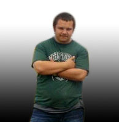
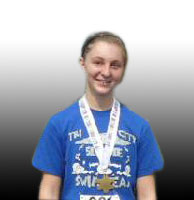
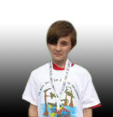

Welcome to the Autism Society Bayou, we are a support organization for everyone in Assumption, Lafourche, St. Mary, Terrebonne and Lower St. Martin parishes affected by autism. We were founded in 2000. It provides places to meet, get information, and share experience with real people affected by autism.
We are an affiliate of the Autism Society, and are also a certified non-profit 501(c)(3) agency. This means the Autism Society Bayou can raise funds for the benefit of its local members and the autism community and can verify receipts of charitable donations over $250 for deduction under federal income tax law.
We holds monthly support meetings where you can you learn and share information about autism. We have a major fund raiser annually, HUNTING FOR THE MISSING PIECES, which is a 5k Run/Walk for autism awareness. The day also includes food, music, dancing, prizes, and activities for the whole family. The 5k Run/Walk funds are to help our members, families, and persons diagnosed with an autism spectrum disorder. We send parents and caregivers to workshops and conferences so they can learn important information to help care for their loved one dealing with an autism spectrum disorder enjoy a better quality of life.
Please feel free to browse our web site and come to our support meetings. We would love to see you there. To get in touch with us, just send us an email.
Name: Tim Age: 17 Diagnosed: age 9 High Functioning
Name: Katie Age: 13 Diagnosed: age 3 High Functioning
Name: Matthew Age: 11 Diagnosed: age 2 Nonverbal
Faces of Autism



Click the pictures to learn more about each indiviual